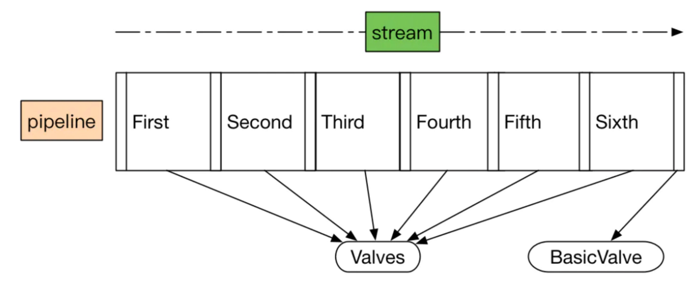

Chapter 5 discusses the container module.
A container is represented by the org.apache.catalina.Container interface and there are four types of containers: engine, host, context, and wrapper.
This chapter offers two applications that work with contexts and wrappers.
Tomcat 中有 4 种 container: Wrapper, Context, Engine and Host. container module 的主要作用是用来处理 request 并向 response 中填充处理结果。这节主要介绍前两种，后两种将在 13 节中介绍。
这节的主要目标是理解一下几个概念分别代表了什么
Container: 这个类注释解释的挺好的。container 表示的是可以执行 client 传过来的 request 的类。container 会将他的 invoke 委托给 pipeline 执行
A Container is an object that can execute requests received from a client, and return responses based on those requests.
Pipeline: 表示装载着 container 将会 invoke 的 tasks 的容器
Valve: 表示将会被执行的 task, 有一个特殊的 valve 叫做 basic valve, 要求最后执行。在这章的例子中，basic valve 用于处理 servlet，不知道实际应用中是不是也是这样处理的，第六章应该可以看到结果。
- ValveContext: 由一个内部类作为实现，由此可以访问外部类的成员变量，遍历所有的 valve。
The Container Interface
container 必须实现 catalina 的 Container 接口。connector 会调用实现类的 invoke 逻辑(怎么调用的我一直没看到，估摸着应该在 Lifecycle 部分才涉及到)。按处理的业务来分，有四种类型的 Container
- Engine: 代表整个 Catalina servlet engine - 虽然我对这里说的 engine 是个什么东西不怎么清楚
- Host: 代表了含有 contexts 的虚拟 host
- Context: 代表了一个 web application, 一个 application 可以包含一个或多个 wrapper
- Wrapper: 代表一个独立的 servlet
以上四种概念的接口定义放在 org.apache.catalina 包下，对应的实现放在 org.apache.catalina.core 下
一个可用的 container 并不需要具备四种 container 类型，最简单的案例只需要一个 wrapper 即可。wrapper 是最低等级的 container，不能再包含其他 container。container 支持的常规操作
- addChild() - wrapper 除外
- removeChild()
- findChild()
- findChildren()
container 还可以包含其他辅助类，比如 Loader, Logger, Manager, Realm 和 Resources. container 还可以通过配置 server.xml 使他在启动服务器时达到动态指定的效果。这种特性是通过 pipeline 和 valves 达到的。
Pipeline Tasks
这节介绍当 container 的 invoke 方法被调用的时候会发生什么。主要涉及到四个接口 Pipeline, Valve, ValveContext 和 Contained. pipeline 包含了 container 将要执行的 tasks, valve 即将要执行的 task. container 默认有一个 valves 但是我们可以自己添加任意多个自定义的 valves. valves 也可以通过配置 server.xml 指定。
这里有个图，但是没显示，我猜是这种责任链的图

pipeline 的工作原理和 servlet 的 filter 是一样的, 使用责任链模式。pipeline 相当于链，valves 相当去 filter。当一个 valve 执行完了之后，会调用下一个 valve 继续执行。自带的那个 basic valve 总是在最后才被调用。
按上面的逻辑，你可能会用如下方式实现 pipeline
1 | // invoke each valve added to the pipeline |
但是 Tomcat 的设计者通过引入 ValveContext 这个 interface 来解决这个问题，工作原理如下
Container 的 invoke() 方法被调用的时候，并不是 hard code 需要做的事情，而是通过调用 pipeline 的 invoke() 方法。pipeline 和 container 的 invoke() 方法定义如下
1 | public interface Pipeline { |
pipeline 需要保证所有被添加进来的 valves 和 basic valve 只被调用一次。pipeline 是通过 ValveContext 这个接口实现该功能的。ValveContext 是 pipeline 的一个内部类(innerClass)，通过这种定义使得 ValveContext 可以访问 pipeline 中的所有对象。ValveContext 中最重要的方法是 invokeNext
1 | public interface ValveContext { |
ValveContxt 会调用第一个 valve 的 invoke 方法，第一个 valve 会调用第二个 valve 的 invoke 方法。Valve 的 invoke 方法的参数列表中包含 ValveContext 方便调用 invokeNext 方法。
1 | public interface Valve { |
The Pipeline Interface
Pipeline 接口定义, container 通过调用它来处理 valves 和 basic valve.
1 | public interface Pipeline { |
The Valve Interface
这个 component 用于处理一个 request，只有两个方法 invoke 和 getInfo
1 | public interface Valve { |
The ValveContext Interface
只有 invokeNext 和 getInfo 两个方法
1 | public interface ValveContext { |
The Contained Interface
valve 可以选择性的实现 Contained 接口，这个接口表明对应的实现最多只能和一个 container 有关系
1 | public interface Contained { |
The Wrapper Interface
Wrapper 表示一个独立的 servlet 定义。Wrapper 的实现类负责管理 servlet 的生命周期。比如调用 init, service 和 destroy 方法。它是最底层的 container 实现，所以不能添加 child, 添加会抛错
1 | public void addChild(Container child) { |
其他一些比较重要的方法比如 allocate 和 load
1 | public interface Wrapper extends Container { |
allocate 用于指定 wrapper 指代的 servlet，load 用于加载 servlet 的实例。
The Context Interface
Context 指代一个 web application. 一个 context 可以包含一个或多个 wrapper
The Wrapper Application
下面是本章的第一个例子，一个简单的 container，只由一个 wrapper 来充当 container 主体。包含七个类
- SimpleWrapper: Wrapper 的实现类，包含一个 Pipeline, 通过一个 Loader 来加载 servlet。
- SimplePipeline: Pipeline 的实现类，包含一个 basic valve 和两个额外 valve
- SimpleLoader: 用于加载 servlet
- SimpleWrapperValve: basic valve 的实现类
- ClientIPLoggerValve, HeaderLoggerValve: 额外 valve 的实现类
- Bootstrap1: 启动类
SimpleWrapperValve 和额外的 Valve 最大的区别是，SimpleWrapperValve 没有在调用 invkeNext, 因为规则上来说，它是最后一个需要调用的 valve 了。
Running the Application
启动服务器，访问 http://localhost:8080 终端显内容如下
1 | ModernServlet -- init |
The Context Application
当服务器需要处理多个 servlet 时，就需要用到 context 和 mapper 了。mapper 帮助父容器选择子 container 处理 request。
PS: mapper 只在 Tomcat4 中使用，到 Tomcat5 就淘汰了。
一个 container 可以使用多个 mapper 支持多种 protocols. 这个例子中只处理一种。比如一个 container 可以配置一个 mapper 处理 http 请求，配置另一个 mapper 处理 https.
1 | public Container map(Request request, boolean update) { |
这个例子的实现中没有做 protocol 的处理，直接返回默认的 mapper。Mapper 接口的定义如下：
1 | public interface Mapper { |
Context 的例子中定义了两个 map, 一个是 url_path - servlet_name 的 map, 另一个是 servlet_name - servlet_class 的 map。就我看来有点啰嗦，这样做可能是为了实现定制 url path 的功能(个人感觉，没有细究)。
处理过程和 SimpleWrapper 一样，通过 pipeline 处理所有的 valves, 最后处理 basic valve. 这里定义的 basic valve 叫做 SimpleContextValve. 他的实现中通过调用 container.map(request, true) 拿到指定的 wrapper，之后调用 wrapper.invoke(req, resp) 完成 servlet 的调用。invoke 的实现中会调用 SimpleWrapperValve 完成 servlet 类加载，并执行 service 方法，完成功能调用。
PS: SimpleWrapper 和 SimpleWrapperValve 是强绑定的，之前找了好久，通过 debug 确定了相互关系。
过程：
- SimpleContext 调用 pipeline 的 invoke 方法
- pipeline 的 invoke 方先调用额外 valves 再调用 basic valve
- basic valve 的 invoke 方法会调用 map 方法找到子 wrapper，如果存在则调用其 invoke 方法